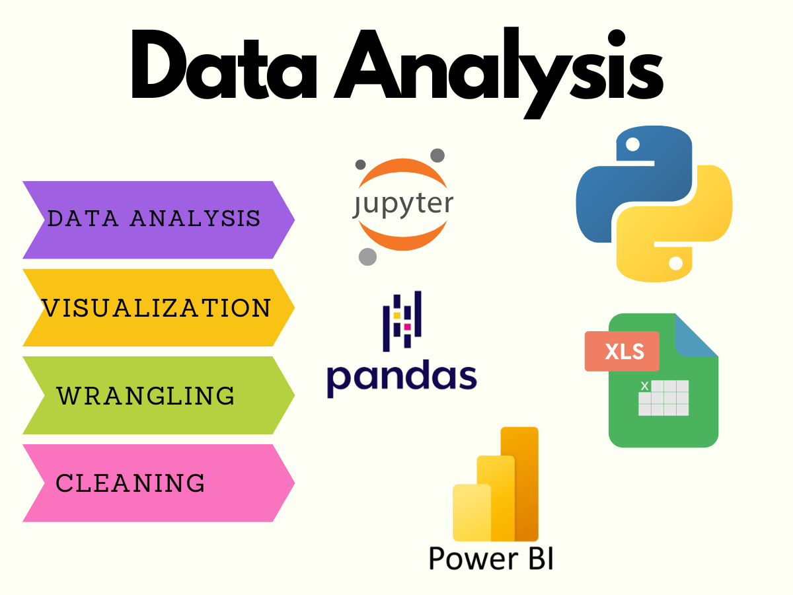

Services I Provide
1. Financial Dashboard in Power BI
I specialize in creating custom Financial Power BI Dashboards that transform your raw data into clear, actionable insights.
- Tailored Financial Dashboards: Customized to your specific needs, showcasing key financial metrics like revenue, expenses, profit margins, and cash flow.
- Interactive Visualizations: Engaging charts and graphs that make complex data easy to understand.
- Real-Time Data Integration: Stay up-to-date with the latest financial information.
- User-Friendly Interface: Designed for ease of use, ensuring you can navigate and interpret your data effortlessly.
- Experienced Data Analyst: With over 3 years of experience in data analysis and visualization.
- Professional Service: Dedicated to delivering high-quality work that meets your needs.
- Fast Delivery: Efficient turnaround to help you start leveraging your data as soon as possible.
Transform your financial data into a strategic asset. Order now to get your custom Financial Power BI Dashboard and make informed business decisions with confidence!
Order on Fiverr2. Expert Data Analysis in Excel, Power BI, and Python
Are you searching for a top-notch Data Analyst, Data Visualization Expert, or Business Analyst? Look no further, you are in the right place!
With over 2 years of experience in data analysis, visualization, and reporting, I specialize in transforming raw data into actionable insights using Excel, Power BI, SQL, and Python. Whether you need advanced Excel functions, engaging Power BI dashboards, or detailed data reports, I’m here to deliver.
My Services Include:
- Excel Data Analysis
- Excel Reporting
- Power BI Dashboards
- Power BI DAX
- Forecasting
- Data Modeling
- KPI Development
- Python Data Analytics
Why Choose Me?
- 100% Satisfaction Guaranteed
- Reliable Communication
- Fast Delivery & 24/7 Availability
- Unlimited Revisions
Contact me to turn your data into valuable insights!
Order on Fiverr3. Interactive Dashboards Using Streamlit and Plotly
With over 2 years of experience as a data scientist and machine learning engineer, I specialize in crafting stunning interactive dashboards using Streamlit and Plotly. Whether you need a real-time dashboard or an engaging visual storyline, you can rely on me to bring your data to life.
Here's What I Offer:
- Interactive Dashboards & Storylines: Create dynamic and engaging visual narratives for your data.
- Diverse Visualizations: Include bar charts, area charts, maps, scatter plots, pie charts, treemaps, line charts, donut charts, gauge charts, and waterfall charts.
- Exploratory Data Analysis (EDA): Uncover trends and insights with detailed EDA.
- Calculated Fields & Database Creation: Develop calculated fields and build databases tailored for your dashboards.
- Real-Time Dashboards: Build live, real-time dashboards for up-to-date data insights.
- Enhanced Interactivity: Add filters, highlighting, and other interactive actions to your dashboards.
- Data Cleaning & Transformation: Handle data cleaning, modeling, and transformation for optimal performance.
Tools & Technologies I Use:
- Python
- Jupyter Notebook
- VSCode
- Plotly
- Plotly Dash
- Seaborn
- Matplotlib
- Streamlit
Ready to transform your data?
Order on Fiverr4. Data Cleaning and EDA Using Python

Transform your raw data into valuable insights with professional data cleaning and exploratory data analysis! Whether you're looking to prepare your data for advanced analysis or simply want to uncover hidden patterns, I've got you covered.
My Services Include:
- Data Cleaning: Handling missing values, outliers, and inconsistencies to ensure accuracy.
- Exploratory Data Analysis (EDA): Using statistical and visualization techniques to understand your data better.
- Data Transformation: Reshaping and formatting data to meet specific analysis needs.
- Visualization: Creating insightful visualizations to reveal trends and patterns.
- Python Libraries: Utilizing libraries such as Pandas, Matplotlib, Seaborn, and NumPy.
- Report Generation: Providing comprehensive reports of findings and recommendations.
Why Choose My Service?
- In-Depth Analysis: Detailed examination to extract meaningful insights.
- Custom Solutions: Tailored to fit your specific data and requirements.
- Fast Turnaround: Efficiently completed to meet your deadlines.
- Professional Expertise: Experienced in handling various datasets and analysis techniques.
Ready to get started? Let’s clean and analyze your data to drive better decision-making!
Order on Fiverr